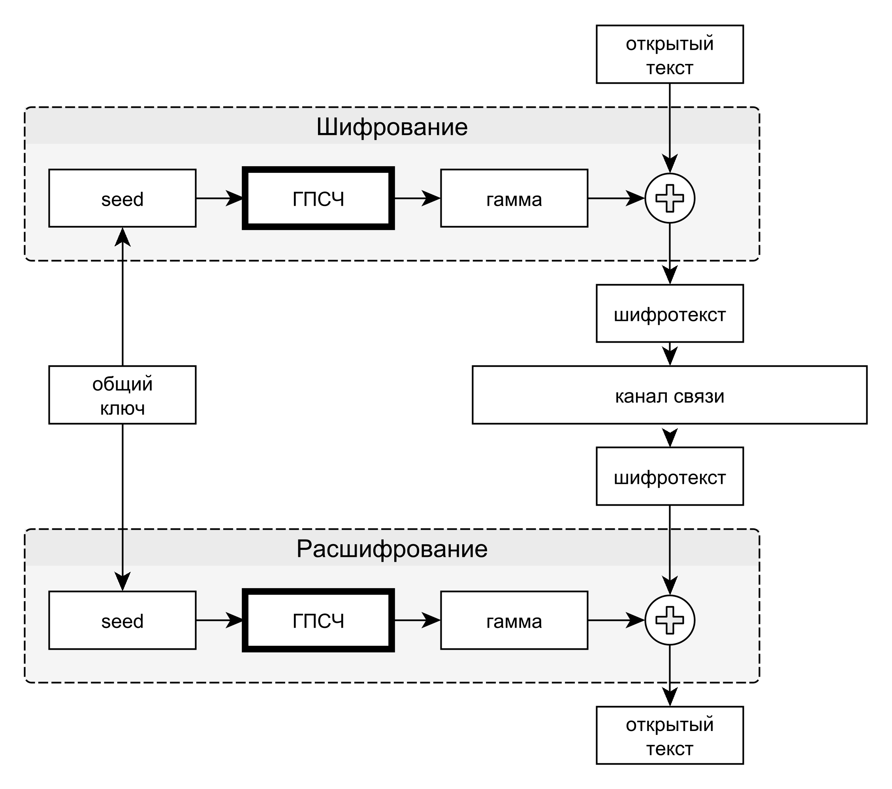

Потоковые шифры осуществляют посимвольное шифрование открытого текста. Под символом алфавита открытого текста могут пониматься как отдельные биты (побитовое шифрование), так и байты (побайтовое шифрование). Поэтому можно говорить о в какой-то мере условном разделении блочных и потоковых шифров: например, 64-битная буква - один блок. Общий вид большинства потоковых шифров приведён на рис.7.1.
Рис. 7.1 — Общая структура шифрования с использованием потоковых шифров
Перед началом процедуры шифрования отправитель и получатель должны обладать общим секретным ключом.
Секретный ключ используется для генерации инициализирующей последовательности (англ. seed) генератора псевдослучайной последовательности.
Генераторы отправителя и получателя используются для получения одинаковой псевдослучайной последовательности символов, называемой гаммой. Последовательности одинаковые, если для их получения использовались одинаковые ГПСЧ, инициализированные одной и той же инициализирующей последовательностью, при условии, что генераторы детерминированные.
Символы открытого текста на стороне отправителя складываются с символами гаммы, используя простейшие обратимые преобразования. Например, побитовое сложение по модулю 2 (операция «исключающее или», англ. XOR). Полученный шифртекст передаётся по каналу связи.
На стороне легального получателя с символами шифртекста и гаммы выполняется обратная операция (для XOR это будет просто повторный XOR) для получения открытого текста.
Очевидно, что криптостойкость потоковых шифров непосредственно основана на стойкости используемых ГПСЧ. Большой размер инициализирующей последовательности, длинный период, большая линейная сложность – необходимые атрибуты используемых генераторов. Одним из преимуществ потоковых шифров по сравнению с блочными является более высокая скорость работы.
Одним из примеров ненадёжных потоковых шифров является семейство A5 (A5/1, A5/2), кратко рассмотренное в разделе6.4.3. Мы также рассмотрим вариант простого в понимании шифра RC4, не основанного на РСЛОС.